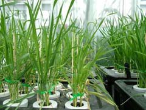
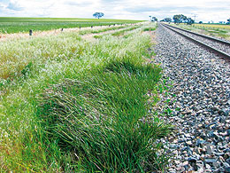

Design and analysis of experiments run under controlled conditions
 Design and analysis of experiments in the Plant Accelerator
C. Brien, H. Rabie, B. Berger and M. Tester
Further, some experiments are being conducted in the Plant Accelerator that are three-phase in that plants spend an initial phase in an ordinary glasshouse room during the intitial growth period. Then, in an imaging phase, they are transferred to a Smartroom for imaging during the main growth period. Finally, in the final phase, they are returned to an ordinary glasshouse room until they are harvested. Designing such experiments requires a separate design for each phase, but the design for one phase must take into account those for previous phases. Methods for producing such designs are to be developed.
We have run an experiment in the Plant Accelerator to invesigate the design of such experiments and Brien, Berger, Rabie and Tester (2013) report the results of this experiment.
Related publications
Brien, C. J., Berger, B., Rabie, H. and Tester, M. (2013) Accounting for variation in designing greenhouse experiments with special reference to greenhouses containing plants on conveyor systems. Plant Methods 9:5. Published paper.
Design and analysis of incubator and greenhouse experiments to evaluate native plant species
C. Brien, T. Tran, J. Boland, R. A. Bailey, H. Mancini and J. Gibb
Revegetation along rail corridor has been considered as a means of solving rail track stability issues and weed and fire risk problems. One of the challenges of restoring vegetation in the rail corridor has been to identify an optimal planting regime in structure, density and species composition in order to address specific site problems, create stable plant communities and conform to industry standards for safety and maintenance requirements. The design and analysis of experiments to study different species, soils and soil-preparation treatments in incubator and greenhouse experiments has been investigated. This has resulted in the development of split plot designs in which both main plots and sub-plots employ two-dimensional designs and in which sub-plot treatments are latinized. A new class of row-column designs, the quasi-Latin rectangle designs, were developed for assigning several factors to the main plots. Also, a comparison of analysis methods for count data from multistratum experiments has been conducted. The methods compared were analysis of variance, both untransformed and transformed, generalized linear models and generalized linear mixed models.
Related publications
Mancini, H., Tran, T. T., Gibbs, J., Brien, C. J. & Boland, J. (2006) Improving rail corridors by restoring native vegetation. In Ravitharan, R. (Ed.) Rail Achieving Growth: Proceedings of the Conference on Railway Engineering (CORE) 2006, Melbourne, 30 April - 3 May 2006. Melbourne, Railway Technical Society of Australasia (RTSA).
Tran, T. T. (2009) Design and Analysis of Experiments for Assessing Indigenous Plant Species. PhD thesis, School of Mathematics and Statistics, University of South Australia.
Brien, C.J., Bailey, R.A., Thao, T.T. and Boland, J. (2012) Quasi-Latin designs. Electronic Journal of Statistics, 6, 1900-1925. Published paper